{kind=link}
{kind=link}
{kind=link}
{kind=link}
{kind=link}
{kind=link}


Revell Germany 1/48 Scale Sikorsky H-34G
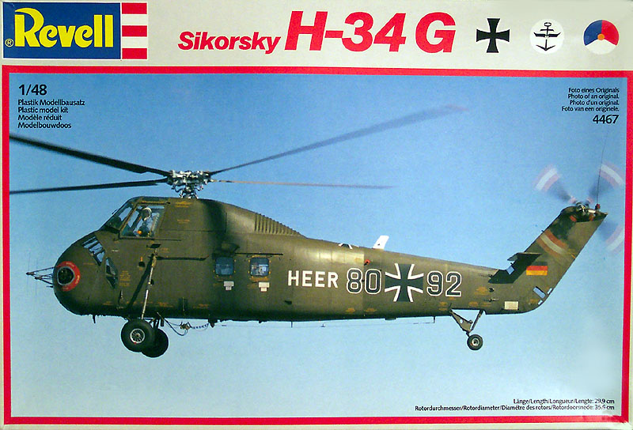
Kit # 4467 Current Collectors Market Value $50.00 to $75.00
Images and text Copyright � 2004 by Matt Swan
Developmental History
Igor Sikorsky.... this was a man of vision without doubt. Just looking back at some of the high points in this mans career can be mind numbing, the development of early World War One aircraft, the very successful flying boats of the depression era and then the successful development of the helicopter and its evolution. Few men have contributed so much to aviation history. Today I want to look at one of his companies post war successes, an aircraft made famous and instantly recognizable to many not only as a Vietnam era workhorse but as a high visibility transport for more than one President of the United States of America � I am talking about the S-58 series of helicopters known better as the H-34, operating under many designations such as Seabat, Seahorse or Choctaw.
In mid 1952 the U.S. Navy issued a requirement for an anti-submarine helicopter with greater capabilities then the Sikorsky S-55 then in service. U.S. Army and Air Force also established a requirement for a new utility helicopter. Sikorsky responded with its S-58, which was essentially a scaled-up version of the S-55 with more than double the power. The S-58 lost both competitions. The Army and Air Force selected the Piasecki tandem-rotor H-21 and the Navy selected the Bell HSL-1. The U. S. Marine Corps, which did not hold a competition, selected the mammoth twin-engine Sikorsky S-56. The HSL-1 proved unsuitable for the shipboard anti-submarine role while the S-56 suffered from development problems and the H-21 production levels could not meet demands. The S-58 as the only readily available alternative and it proved to be an excellent choice for all three services.
The H-34 was the standard helicopter for many ground forces throughout the world. The characteristic fuselage could accommodate 18 soldiers or 12 stretchers. Its primary role was personnel and cargo transport. The aircraft were "slick" meaning that they had no weapons but by August 1962, M-60 machine guns were mounted inside the aircraft. Two machine guns were utilized: one for the crew chief, mounted at the main door and one mounted in the rear window on the opposite side for use by the gunner. During its service in Vietnam pilots discovered that some of the design�s innovative features carried penalties in the combat zone. The high cockpit made it an obvious target, and the drive shaft created a partition that made it difficult for crew chiefs to come to the aid of the cockpit crew if they became injured. The magnesium skin resulted in very intense fires, and contributed to significant corrosion problems. The airframe was also too weak to support most of the weapon systems that were installed in the field in attempts to create an ad-hoc gunship.
Sikorsky built 1,825 S-58s, and UH-34s including the A, C, G, and J models, but the D became the most common. The German Army bought a total of 110 "G" versions, the main users being the army flying units but it was also flown by the German Navy in SAR service. In 1956 the British company Westland acquired a license to build the H-34 and developed a turbine-driven version known as the Wessex. In France both the original version and an up-rated version with two Turbomeca Bastan IV turbines were built and as used transportation and combat helicopters. Beginning in late 1957, and continuing through the early 1960s, millions of people around the world witnessed H-34s transporting the President of the United States. This was the first regular use of helicopters in that role.
Initially ignored by the military it soon became a true workhorse in service with all branches of the U.S. armed forces and ultimately served for many years and in great numbers. The H-34 demonstrated an ability to sustain a substantial amount of combat damage and still return home. The aircrews who flew it in combat recall their service with genuine affection. Production continued up to January 1970, when the last of 1,825 examples was delivered. It was the final evolution of the rotary engine powered helicopter and spanned the gap into turbine-powered craft.
The Kit
You may have noticed that I don�t do a heck of a lot with helicopters, in fact this is the first one I�ve reviewed on my site (just may start a trend here). I figured �What the heck, if you�re going to do helicopters you can�t pick a better one than this to start.� This kit from Revell of Germany and its sister kit the UH-34D were last produced in 1988 and have become very collectable for a couple of reasons, first just because of the subject and second for the quality of the kit. This kit was produced during those change-over years when recessed lines were just becoming an industry standard and it displays some slightly large recessed lines in addition to lots of fine rivets � a very interesting combination.
This example of the kit set in a modelers stash in England for the last sixteen years but all the parts were still in the original sealed bags. I found some warpage on the fuselage halves and on two of the main rotor blades. I�m not sure if this is a result of long-term storage or an original defect. Either way it will not take a lot to correct the matter. The parts for this kit are molded in two different colors of plastic, the main exterior parts being done in a bright olive plastic and the interior detail pieces are done in a medium gray plastic. The sprue gates are of a conventional size and there is no apparent flash on the parts. The plastic is slightly brittle and care must be taken when cutting the parts off the trees or the material will tear. There is a single sprue of clear parts covering the main windshield, side doors and cabin windows. There are eight parts on this sprue.
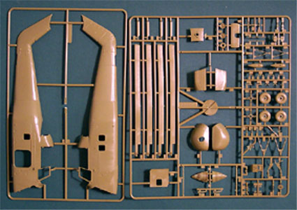
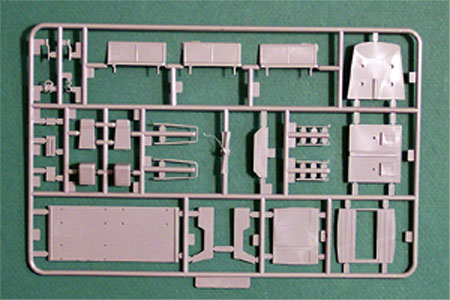
You can click on the above images to view larger pictures.
Taking a look at some of the finer points of the kit, we have a blank piece of plastic for the main dash and center consol. Details here are provided with a pair of black and white decals. The crew seats feature nice side rails but no seat belts and the cushion detail is nonexistent. Inside the main cabin there are three fairly decent bench seats, again with no seat belts and sidewalls with adequate detail. What is most surprising considering the aforementioned features is that there is no roof in the main cabin. This is one piece that will most definitely have to be scratch built. There are a variety of grab handles provided for different areas around the exterior. The engine vent areas are detailed with a screen pattern cast into the plastic except for one panel on the Starboard side that is blank, this will need a little scribe work during construction to make it conform to the rest of the kit. Other than the warpage on the fuselage half and the two rotor blades the general parts fit seems to be very good.
In review we have eight clear pieces, 73 pieces in bright olive and 28 pieces in medium gray plastic for a total of 109 parts in the box.
Decals and Instructions
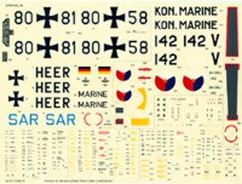
The instruction booklet is fairly comprehensive on this kit. While it contains no historical information on the helicopter it does give a good set of color codes with plenty of color call-outs throughout the assembly instructions. We have nine printed pages with thirty-three exploded view diagrams. Three pages are devoted to decal placement and exterior painting instructions for three different aircraft. Gray texture blocks with associated color code letters represent the color keys on these pages. The texture blocks are so similar that it is difficult to distinguish one from the other, especially on the SAR version.
The decal sheet provided is very comprehensive, it allows us to model three different aircraft; a German Army unit, a German SAR unit and one that's Dutch Navy. There are lots of service stencils included. Print registry looks to be good but color density may be a little on the light side � it�s hard to tell at this point without removing a decal from the sheet. They do appear to be nicely thin and based on previous Revell decal sheets will most likely behave when exposed to most setting solutions. You can click on that small image of the decals to view a full sized picture.
Conclusions
This certainly is a very neat helicopter kit but the surface detail such as those oversized panel lines and raised rivets may have to go. Before I start filling panel lines and sanding rivets off I think a little more research is needed into the actual aircraft. The overall parts fit seems good, the directions are very good and the decals are more than ample. On most real aircraft the engine room cooling vents are generally almost see-through and they are solid plastic on the model. 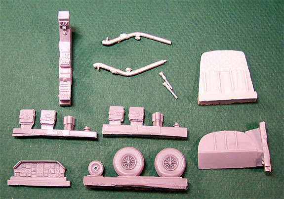
I would consider cutting these out for a better look. There is not much available in the accessory department for this model. Aires does make a very nice Wright Cyclone 1820 radial engine and it is a kit all by itself. If you wanted to open the cooling vents or even open the engine bay doors this would be an excellent addition. Cutting Edge makes a very nice resin detail package for the cockpit and has some wheel masks available. The picture to the left shows the Cutting Edge set, notice the replacement seats have molded in seat belts and so do the back rests for the bulkhead wall. The dash is very well detailed on both the front and the back. The replacement center consol makes the kit consol look just plain laughable. Included with the set are white metal landing gear struts and collective controls, which the Revell kit lacks. The replacement wheels are as nice as the rest of the items, what you cannot see in this photo are the brake calipers cast into the other side of the wheels. There is also an alternative decal sheet still out there from FCM for a Brazilian version. The lack of seat belts can be remedied with masking tape or wine bottle foil and some brass belt buckles.
I think that if you are an aficionado of helicopters this would be a required piece for your collection. The hardest thing is going to be finding one. After eighteen years out of production and the price they sell for now you would think that Revell-Monogram would put it on the re-release schedule.
Construction
7/13/04
I really don�t know what happened here. I was just looking over all these nifty parts and next thing I knew stuff was getting glued together and I was sucked in to the build. The Cutting Edge instructions begin with measurements to cut a new cabin floor, as the kit floor is too short. Once this was done I test fit the floor and the kit front bulkhead and found that there are a few interior areas that will need to be shaved off.
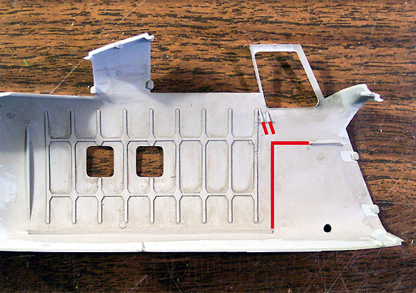
In this shot the red areas are where the original kit part alignment slots were, each of these on both sides were carefully removed and then the area was painted with a light gray acrylic.
While this was drying I returned to the interior assembly measuring and cutting a piece of stock plastic to form a cabin roof. If the kit were assembled per Revell�s instructions there would be no interior access to the flight deck, which is totally inaccurate. The new floor pan gives this access and the cabin roof must be cut to the length of the original kit floor pan to allow for this opening. On most S-58/H-34 helicopters the rear cabin door was secured with a cargo net, this is not included in the kit so I have to build one. This is very simple; I�ve cut thin strips of masking tape and laid them over the opening. The ends are secured with minuscule drops of superglue and the excess is cut off. With the front and rear bulkheads installed and the basic flight deck floor in place I am ready to paint. The interior is done with Gunze-Sangyo light gray acrylic then the cargo nets was brush painted with Polly Scale rust. The control columns were done with Model Master interior green and black handles.
I taped the fuselage halves together and placed the cabin assembly in place. Now the resin bulkhead for the flight deck is pressed into position and the crew seats are super glued in place. I glued the collective controls in and dry fit the center consol.
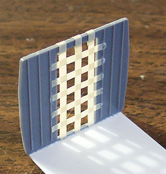
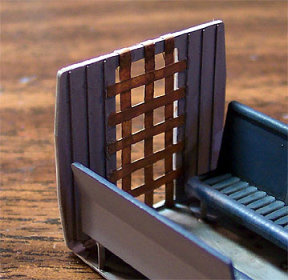
These pieces were then removed and painted the same base color as the cabin area. The seats were all done with a dark sea gray and the collectives were done in flat black with silver details. Seat belts were brush painted with a gray so light it was almost white and buckles were done with some Testors silver. The upper and lower consoles were painted flat black and dry brushed with white then steel to add depth. The main cabin benches were painted the same light gray as the cabin and the seats were done in the dark sea gray. Everything got a good coating of sludge wash and then was wiped with a damp piece of paper towel to add highlights.
This thing is just charging ahead � there seems to be no stopping it �. I have the helo bug! Okay, okay, take a deep breath. I try to stop for dinner but am soon drawn back to the modeling desk � oh the humanity! Following the Cutting Edge directions I drill new holes in the fuselage sides to accept the white metal landing gear and dry fit these pieces. The directions do not specify a left or right and I cannot figure out how it should be. I cut the rest of the landing gear pieces from the sprue but they are no help. Now I must pull myself from the modeling desk and do some research on the Internet but first here are the interior pieces just prior to installation.
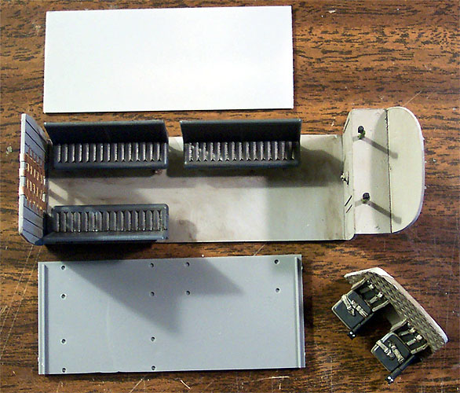
To the top of the picture is the new cabin roof, to the bottom is the old cabin floor and the flight seats can be seen already attached to the bulkhead.
After spending an hour on the net I found a few shots that showed the early landing gear clearly enough to determine the correct placement. One thing I was able to see was that Cutting Edge did an admirable job of correctly reproducing these struts. So here it is; there is a small round piece on top of the strut that is flat on one side and curved on the other � the curve goes to the front of the aircraft and the flat to the rear. I do not have to install these pieces until after the fuselage halves are together but it�s good to know how they will end up. After consulting the directions I see that all the clear window pieces will be installed from the outside � this is good. Now I can go ahead and install the main cabin and glue the fuselage halves together.
If you remember from the kit review section there is a nasty bit of warpage in the fuselage halves. I had to use several small bar clamps to hold this thing in the proper position while I wicked a bunch of Tenex 7R into the seam. I had to let this set for a few hours before I could continue and the strain was almost more than I could bear but at last I was able to return and finish installing the flight bulkhead.
7/26/04
The interior of this was all �fun and games� but now it�s slowing down a little. I spent a bit of time on-line looking at different pictures of H-34s looking for a scheme that would catch my attention and finally settled on a Belgium aircraft. Daco Decals makes a 1/48-scale sheet for three of these units and I placed my order. While I was doing this research I did a little more assembly on the model. I sanded off the square plate on the belly from the �V� style landing gear and installed the engine compartment doors with exhaust system.
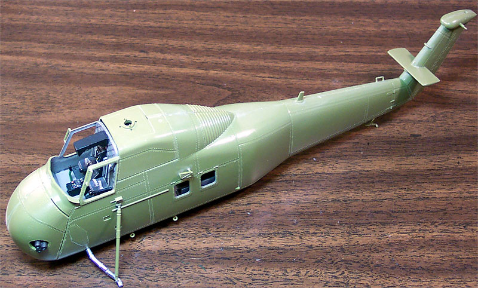
Course once I settled on my final scheme I find that these were �D� models and not �G� models. How do you tell the difference you ask? Two points give it away; one being the landing gear which I have already taken care of with the Cutting Edge replacements, the second being the exhaust. It is totally different on the �D� exiting from the lower quadrant of the engine bay rather than from the mid section like the �G� does. Now I need to remove the resin exhaust, cover/fill that port and open a new port plus build an appropriate exhaust stack for the �D� �. grrrrrrr.
I also added a few exterior details such as various grab handles, the tail plane and the rear landing gear strut. During my research time I looked very carefully at many different pictures and could not find a single example of a Choctaw with raised rivets anywhere on it so it is apparent that I will have to shave some rivets off this model. That will happen after my next visit to the local hobby shop � need to buy a different blade for my razor knife. I shifted my attention to the dash from here. I�m working with the resin dash from Cutting Edge, it has some very nice detail on it � both front and back, which is good as the backside will be very visible once completed. For the moment let�s look at the front side. The instrument faces have good outside definition but no interior face definition. After painting the entire thing flat black I filled one large face with a light-green paint and another with a light blue to simulate CRT screens. All the other faces were filled with flat white paint.
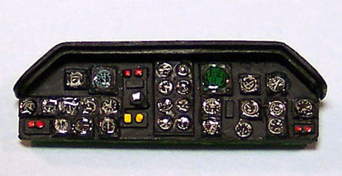
After the paint had a chance to dry overnight I pulled out a sheet of Reheat instrument decals � man do I love these things. These are printed on a continuous sheet so you have to cut very close to the image but they sure add some kick to a dashboard. I choose two large CRT decals to place over the colored instruments and used standard round faces for all the rest. The dash was treated with Micro-Sol to settle the decals then sealed with Polly Scale clear flat. After this had dried completely I placed a small drop of Testers Clear Parts Cement on the face of each instrument to give it that glassy look. Other details were finished with Testers flat red, yellow and white enamel paint. This is just the front, I still have to place some wiring and support brackets for the back � we�ll come back to that later.
8/12/04
A few other projects have been intruding on my time but I have not forgotten this build. I worked on adding a wiring harness to the backside of the dash. At first I was going to use fine fuse wire but it was so difficult to bend each piece and form the umbilicals that I wanted I had to discard the idea and do some brainstorming. I settled on trying to build the harness out of invisible thread. I cut several short lengths of thread in preparation and placed a goodly drop of superglue on my post-it pad. I painted the backside of the dash with accelerator then picked up pieces of thread with tweezers and dipped the end into the glue then touched it to the instrument pod on the dash. This worked great! In less than an hour I had all the instruments wired with the exception of the center consol, which will be hidden from view by the support columns.
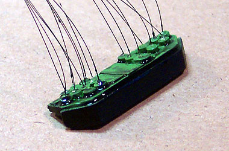
All the threads are then painted flat black and allowed to dry. Next I simply bundle them together and tie them with more invisible thread (unpainted) forming a couple of smaller umbilicals and one large one. The ends are cut off to fit the area inside the cockpit and it is ready to go. From here I cut a couple of short lengths of round stock styrene rod and superglue them to the back of the dash for my support columns, these are then trimmed to fit and painted interior green. The entire assembly is glued into place but care must be taken to not interfere with the fit of the windshield. I had to remove and reinstall the dash twice before everything fit nicely.
Now I can start masking some clear parts. Each side window is covered with masking tape then I lightly sand the edges to cut the tape off. These are placed into the fuselage with Testors Clear Parts Cement. The side windows are masked and glued in place and I have started to mask the main windshield � this one is taking a little more time.
I also removed that really nice looking Cutting Edge exhaust and filled the port in the engine cover. I took a thick piece of sprue, sanded it smooth and hollowed it out to make a single large exhaust pipe. I will drill a hole in the correct location for the �D� model and install this new scratch built exhaust pipe. A few other odd things have been dealt with over the last few weeks, in the previous picture of the model you may have noticed a slight gap around the engine doors � that has been carefully filled and rescribed. The fit of the doors at the very tip of the nose was not very good and has been filled, sanded and scribed to correct a slight �overbite�. One of my modeling buddies (Ollie) has convinced me that helicopters are covered with rivets and that I do not need to sand all these rivets off � okay, it didn�t really take that much to convince me since it�s going to make my life easier in the end.
Soon, very soon and we will be putting some primer on this little doll.
8/23/04
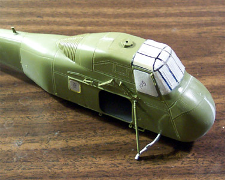
I�ve continued to slowly progress on this build. I finally got the rest of the clear parts masked off and ready for installation. The original exhaust manifold was punched back into the engine bay then reglued to cover the port. The remaining area was filled with Squadron white putty and sanded smooth. I selected a large piece of sprue from the spares box, sanded it smooth and bored out the interior to create a new exhaust pipe. I checked my reference material for exit location and cut a hole into the nose of the model for the new exhaust.
Now I need to deal with some of the FBM units. What�s that, you ask? I once heard a story of a modeler who went to an air show. At this show were a couple of A-10 Warthogs. The modeler approached the pilot of one of these planes and inquired as to the purpose of a few of the raised housings mounted on the aircraft. The pilot immediately responded that they were FBM units. The modeler had never heard of this type of equipment before and asked for a more detailed explanation. The pilot responded that he just drives this, that unit is F*****g Black Magic. I need to make three different FBM units for this, one large one underneath and two smaller ones on top. The bottom unit is made from a strip of Evergreen sheet wrapped around the handle of a #2 Xacto knife with the ends glued together. This was capped with another piece of sheet stock, trimmed, sanded and glued in place. The top FBM units were made from thick strips of styrene sanded into shape and glued in place.
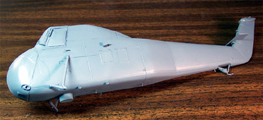
One last detail to address is the lower aerial that runs the length of the fuselage. It is very evident in all reference pictures but no materials are included in the kit to build it. I cut several very short lengths of copper fuse wire, each about one eighth of an inch long. Using my Welder�s Tip Drill I bored shallow holes in the fuselage and mounted the wire studs into them with superglue. The cabin door is stuffed with tissue paper and all the masks are checked to make sure they are secure. Now she is ready for that first coat of primer.
The primer revealed that the old exhaust port had not been cleaned up enough, the entire thing became visible as an outline once the paint was on it. This is one important reason why we use primer � catch those mistakes while they can still be fixed. Another coat of putty, some more sanding and a return to the paint room - everything looks good now. Time to let this cure for a day or so.
9/6/04
After that primer coat had cured for a few days I addressed the primary color considerations. This is being done as a Belgium Air Force SAR unit and I need a very dark Navy Blue, almost an Artic Blue. Working off of the internet photos of the Belgium Aircraft and from the color sheets provided by DACO with the decals I mixed my own enamel paint to come as close as I possibly could. The entire model was airbrushed with the custom blue then I worked on the rotors a while so that could cure.
DACO provides the warning strips for the rotor tips as decals so all I need to deal with is basic painting. The tops of the blades are primed with Krylon Gloss Black then painted with Alclad White Aluminum. The bottoms of the blades are done with Tamiya Flat Black and the connecting hardware is done with Model Master Steel. More time passes and I can come back and mask the helicopter body for the Rescue Orange. I used Testors enamel Orange for this and applied three light coats then removed the masks. The engine cooling vents gave me the most trouble, in reality these are simply screens that you can actually see through but on the model they are solid cast with some slight texture. I considered cutting them out and replacing them with screen but then would have to detail the engine compartment, buy an engine kit and detail that and I did not really feel like going that far on this build. Instead I elected to mask off the areas and airbrush them with some Gunze-Sangyo Burnt Iron.
The wheels (from Cutting Edge) were painted with a tire black then the hubs and brakes were painted with Model Master Steel. The main rotor was assembled and the linkages were painted with Model Master Steel and Tamiya Silver. The cover plate that the rotor inserts into is not glued in place yet so I can deal with all painting and decaling without having to work around the rotors. The blades are being gently worked over by stressing them around a can of compressed air to create a drooped effect. This happens in little steps so as to not overstress the plastic and cause damage. In the picture below the rotor assembly is resting in place and winch assembly has yet to be installed.
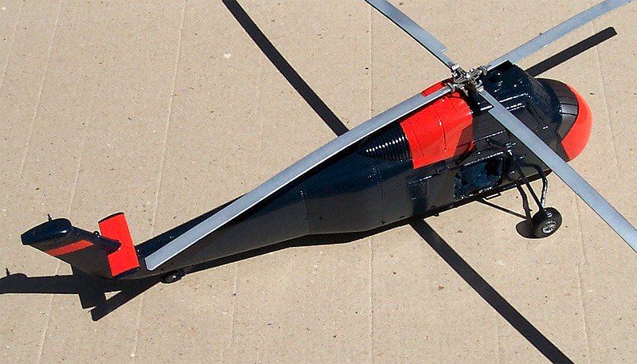
9/19/04
Since all the paints I have been working with on this model�s exterior are glossy in nature I do not need to apply Future or other gloss coat prior to decaling. With that said I have launched into several sessions of decaling. The DACO decals are very nice to work with, they loosen from the paper backing quickly, slide off nicely and allow plenty of time for positioning. They behave very well with Micro-Set and Micro-Sol setting solutions. There is a boatload of little decals to deal with here, never have I seen so many little markings for a single aircraft but all are very clear and legible. The main rotor is still not permanently attached to the model and I have yet to start construction of the tail rotor. I think about two more serious sessions with the decals and I�ll be ready to finish this build off.
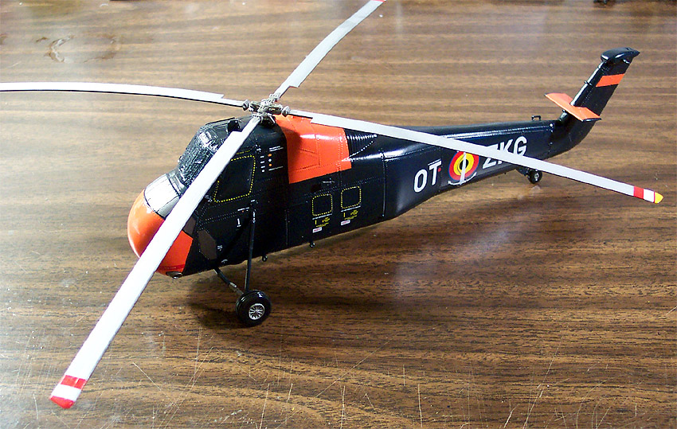
10/3/04
Before starting the next session of decals I built an aerial from invisible thread along the wire masts I had installed much earlier in the build. This was attached with super-glue and painted brass with white insulators on each mast. Now the last of the decals are placed. Panel lines in the orange areas were washed with sludge wash and the model was coated with Poly Scale clear flat. I realized that I had not wired the winch as I had planned on so came back to this � I used short lengths of fine fuse wire pre-bent to position for each of the three control cables and more to built the lift cable and hook. The side door was glued in place and finally the rotors were installed.
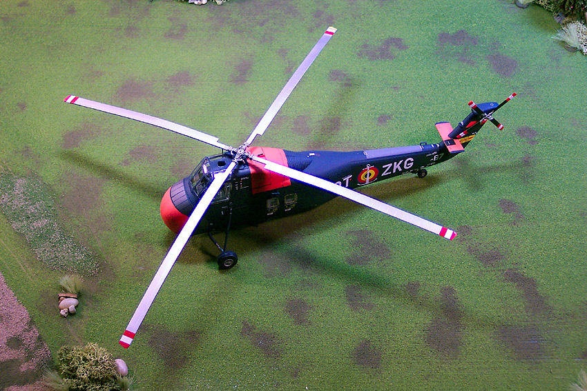
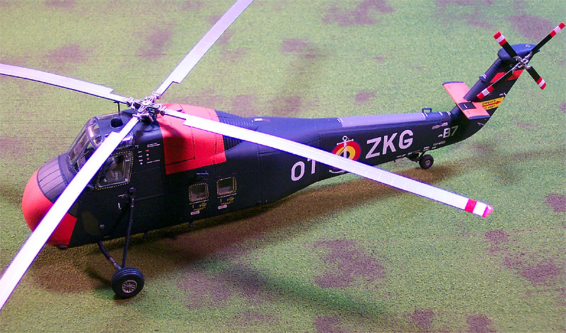
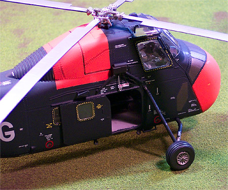
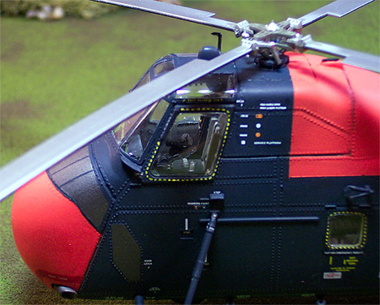
Here you can get a view of the winch cables over the door
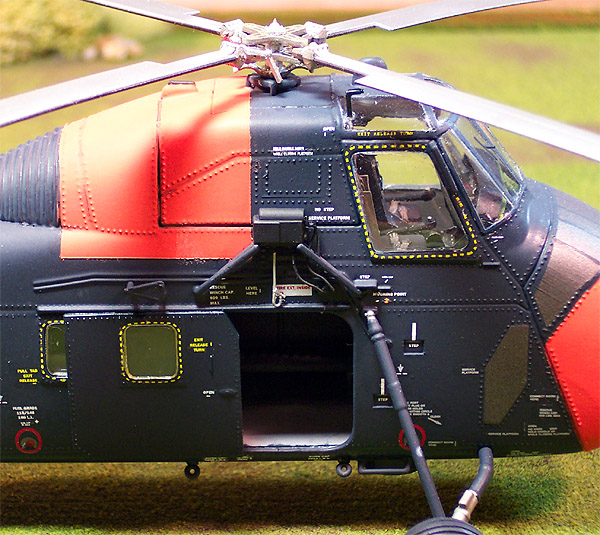
While I was decaling this model I was also decaling another with some Cutting Edge decals, the DACO decals were easily as good in quality and behavior as the Cutting Edge decals were � I highly recommend decals from DACO Products.